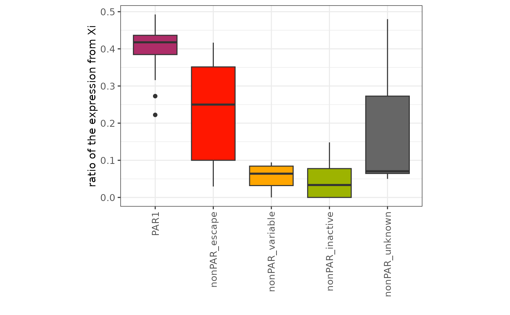
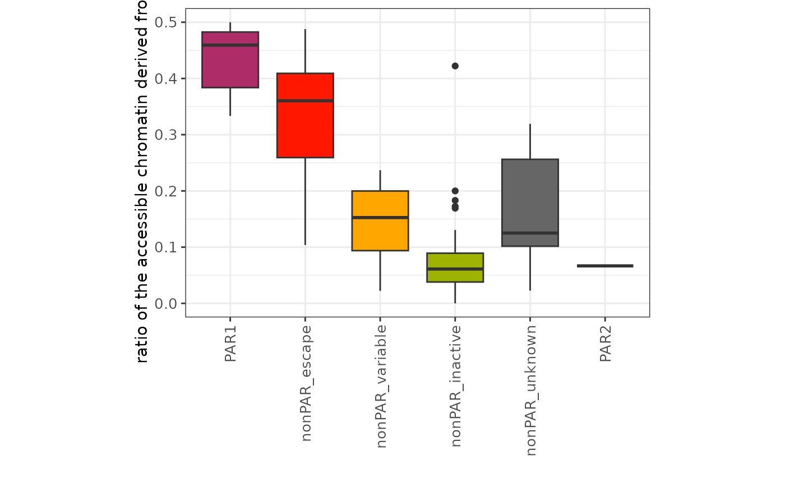

scLinaX_vignette
scLinaX_vignette.RmdAbout scLinaX
One of the two X chromosomes of females is silenced through X chromosome inactivation (XCI) to compensate for the difference in the dosage between sexes. Among the X-linked genes, several genes escape from XCI. scLinaX is a computational tool designed for the quantification of the escape from X chromosome inactivation using single-cell RNA sequencing data obtained through droplet-based methodologies.
Usage
First, load the scLinaX package.
For demo, load the test dataset included within the scLinaX package as well.
If you would like to run scLinaX with your data, please prepare ASE data and cell annotation data. In the original manuscript, we prepared ASE data using cellsnp-lite and Annovar. We applied QC, namely variant filtering based on the allele frequency in the reference panels (e.g. 1000 genome project dataset). The format should be like below (Please also see the reference for the dataset).
head(multiome_ASE_df)
#> # A tibble: 6 × 10
#> SNP_ID POS REF ALT cell_barcode REFcount ALTcount OTHcount Gene
#> <chr> <dbl> <chr> <chr> <chr> <dbl> <dbl> <dbl> <chr>
#> 1 chrX:299800:… 299800 C A AAACCAACAGG… 1 0 0 PLCX…
#> 2 chrX:299800:… 299800 C A ACAACACTCTA… 1 0 0 PLCX…
#> 3 chrX:299800:… 299800 C A ACTAACTCATT… 1 0 0 PLCX…
#> 4 chrX:299800:… 299800 C A ACTGAATGTGA… 1 0 0 PLCX…
#> 5 chrX:299800:… 299800 C A CCGCTAAAGCT… 1 0 0 PLCX…
#> 6 chrX:299800:… 299800 C A CGTTGCGCACA… 1 0 0 PLCX…
#> # ℹ 1 more variable: Sample_ID <chr>
head(multiome_Annotation)
#> # A tibble: 6 × 2
#> cell_barcode Annotation
#> <chr> <chr>
#> 1 AAACAGCCAATCCCTT-1 CD4 TCM
#> 2 AAACAGCCACACTAAT-1 CD8 Naive
#> 3 AAACAGCCACCAACCG-1 CD8 Naive
#> 4 AAACAGCCAGGATAAC-1 CD4 Naive
#> 5 AAACAGCCAGTTTACG-1 CD4 TCM
#> 6 AAACAGCCATCCAGGT-1 CD16 MonoLet’s run scLinaX! The result will be a list object including
$reuslt and $raw_exp_result which are used in
the subsequent process.
scLinaX_res<-run_scLinaX(ASE_df=multiome_ASE_df,XCI_ref=XCI_ref,QCREF=AIDA_QCREF,
Inactive_Gene_ratio_THR=0.05,SNP_DETECTION_DP=30,SNP_DETECTION_MAF=0.1,QC_total_allele_THR=10,
HE_allele_cell_number_THR=50,REMOVE_ESCAPE=TRUE,PVAL_THR=0.01,RHO_THR=0.5)
#> [1] "Start processing of sample 1 (total sample number = 1)"
#> [1] "Finish processing of sample 1 (total sample number = 1)"
head(scLinaX_res$result)
#> # A tibble: 6 × 24
#> Sample_ID SNP_ID CHR POS REF ALT Gene XCI_status Gene_class
#> <chr> <chr> <chr> <dbl> <chr> <chr> <chr> <chr> <fct>
#> 1 Multiome chrX:101044782… nonP… 1.01e8 G A TRMT… inactive nonPAR_in…
#> 2 Multiome chrX:10139201:… nonP… 1.01e7 C G WWC3 inactive nonPAR_in…
#> 3 Multiome chrX:10144298:… nonP… 1.01e7 C A WWC3 inactive nonPAR_in…
#> 4 Multiome chrX:101626444… nonP… 1.02e8 A G ARMC… inactive nonPAR_in…
#> 5 Multiome chrX:101882824… nonP… 1.02e8 G A ZMAT1 variable nonPAR_va…
#> 6 Multiome chrX:101931416… nonP… 1.02e8 G A ZMAT1 variable nonPAR_va…
#> # ℹ 15 more variables: Used_as_refGene <chr>, Used_as_refSNP <chr>,
#> # Total_A_allele <dbl>, Total_B_allele <dbl>, Total_allele <dbl>,
#> # Expressing_cells <int>, minor_allele_ratio <dbl>, Reference_Gene <chr>,
#> # Num_Reference_Gene <int>, Reference_SNP <chr>, Num_Reference_SNP <int>,
#> # Reference_Cell_Count <int>, Num_A_cells <int>, Num_B_cells <int>,
#> # Num_Fail_cells <int>
head(scLinaX_res$raw_exp_result)
#> # A tibble: 6 × 20
#> SNP_ID Sample_ID POS REF ALT cell_barcode REFcount ALTcount OTHcount
#> <chr> <chr> <dbl> <chr> <chr> <chr> <dbl> <dbl> <dbl>
#> 1 chrX:101… Multiome 1.01e8 G A ATGGTTATCCT… 1 0 0
#> 2 chrX:101… Multiome 1.01e8 G A CAAGTGAAGTT… 1 0 0
#> 3 chrX:101… Multiome 1.01e8 G A CACGCTAAGTT… 1 0 0
#> 4 chrX:101… Multiome 1.01e8 G A GCTAAGAAGTT… 1 0 0
#> 5 chrX:101… Multiome 1.01e8 G A GCTATTGCAAT… 1 0 0
#> 6 chrX:101… Multiome 1.01e8 G A GTACTTCGTTG… 1 0 0
#> # ℹ 11 more variables: Gene <chr>, XCI_status <chr>, CHR <chr>,
#> # Gene_class <fct>, A_allele <dbl>, B_allele <dbl>, Xa <chr>,
#> # Used_as_refGene <chr>, Used_as_refSNP <chr>, Reference_SNP <chr>,
#> # Reference_Gene <chr>Above results should be summarized using the
summarize_scLinaX function before analysis. If no
Annotation is supplied, this function returns the ratio of expression
from the inactivated X chromosome for all cells. If Annotation is
supplied, this function returns the ratio of expression from the
inactivated X chromosome for each cell annotation.
PBMC_summary<-summarize_scLinaX(scLinaX_res,QC_total_allele_THR=10,Annotation=NULL)
head(PBMC_summary)
#> # A tibble: 6 × 24
#> Reference_SNP Sample_ID Reference_Cell_Count SNP_ID CHR POS REF ALT
#> <chr> <chr> <int> <chr> <chr> <dbl> <chr> <chr>
#> 1 chrX:47624401:… Multiome 2056 chrX:… nonP… 1.54e8 G A
#> 2 chrX:47624401:… Multiome 2056 chrX:… nonP… 2.37e7 A G
#> 3 chrX:47624401:… Multiome 2056 chrX:… nonP… 1.10e8 T C
#> 4 chrX:47624401:… Multiome 2056 chrX:… PAR1 1.59e6 C T
#> 5 chrX:47624401:… Multiome 2056 chrX:… nonP… 1.58e7 C T
#> 6 chrX:47624401:… Multiome 2056 chrX:… nonP… 1.54e8 G A
#> # ℹ 16 more variables: Gene <chr>, XCI_status <chr>, Gene_class <fct>,
#> # Used_as_refGene <chr>, Used_as_refSNP <chr>, Total_A_allele <dbl>,
#> # Total_B_allele <dbl>, Total_allele <dbl>, Expressing_cells <int>,
#> # minor_allele_ratio <dbl>, Reference_Gene <chr>, Num_Reference_Gene <int>,
#> # Num_Reference_SNP <int>, Num_A_cells <int>, Num_B_cells <int>,
#> # Num_Fail_cells <int>
cell_type_summary<-summarize_scLinaX(scLinaX_res,QC_total_allele_THR=10,Annotation=multiome_Annotation)
head(cell_type_summary)
#> # A tibble: 6 × 20
#> Sample_ID SNP_ID CHR POS Major_allele Reference_SNP REF ALT Gene
#> <chr> <chr> <chr> <dbl> <chr> <chr> <chr> <chr> <chr>
#> 1 Multiome chrX:1014… nonP… 1.01e7 B chrX:4762440… C A WWC3
#> 2 Multiome chrX:1019… nonP… 1.02e8 A chrX:4762440… T G ZMAT1
#> 3 Multiome chrX:1036… nonP… 1.04e8 A chrX:4762440… T C MORF…
#> 4 Multiome chrX:1036… nonP… 1.04e8 A chrX:4762440… T C MORF…
#> 5 Multiome chrX:1100… nonP… 1.10e8 B chrX:4762440… G A TMEM…
#> 6 Multiome chrX:1189… nonP… 1.19e8 A chrX:4762440… A G LONR…
#> # ℹ 11 more variables: XCI_status <chr>, Gene_class <fct>,
#> # Used_as_refGene <chr>, Used_as_refSNP <chr>, Reference_Gene <chr>,
#> # Annotation <chr>, Major_allele_count <dbl>, Minor_allele_count <dbl>,
#> # Total_allele <dbl>, Reference_Cell_Count <int>, minor_allele_ratio <dbl>Let’s check the result of the scLinaX analysis. The
minor_allele_ratio (ratio of the expression from Xi) tend
to high in the escapee genes compared to other nonPAR genes as
expected.
if (require("ggplot2")) {
PBMC_summary$Gene_class<-factor(PBMC_summary$Gene_class,levels=c("PAR1","nonPAR_escape","nonPAR_variable","nonPAR_inactive","nonPAR_unknown","PAR2"))
p<-ggplot(PBMC_summary,aes(x=Gene_class,y=minor_allele_ratio,fill=Gene_class))+
geom_boxplot()+
theme_bw()+
theme(axis.text.x = element_text(angle = 90, vjust = 0.5, hjust = 1, size = 10),
axis.text.y = element_text(size = 10),aspect.ratio=2/3,legend.position="none")+
scale_fill_manual(
values=c("PAR1"="#ae2d68","nonPAR_escape"="#ff1700","nonPAR_variable"="#ffa600",
"nonPAR_inactive"="#9db300","nonPAR_unknown"="#666666","PAR2"="#729efd"))+
xlab("")+ylab("ratio of the expression from Xi")
p
}
#> Loading required package: ggplot2
About scLinaX-multi
XCI induces chromatin-level transcriptional repression on Xi, while the transcriptionally active chromatin state on Xi can be observed under the escape from XCI. scLinaX-multi is a computational tool designed for the quantification of the escape from X chromosome inactivation at the chromatin accessibility level using single-cell multi-omics (RNA + ATAC) data such as 10X multiome.
Usage
For demo, load the additional test dataset included within the scLinaX package.
Let’s run scLinaX-multi! Note that scLinaX-multi takes the output of scLinaX as an input. The result will be a dataframe (tibble) containing raw per-cell scLinaX-multi results. which are used in the subsequent process.
scLinaX_multi_res<-run_scLinaX_multi(PBMC_summary,scLinaX_res,multiome_ATAC_ASE_data,
multiome_peak_data,SNP_DETECTION_DP=30,SNP_DETECTION_MAF=0.10)
head(scLinaX_multi_res)
#> # A tibble: 6 × 17
#> SNP_ID Sample_ID POS REF ALT cell_barcode REFcount ALTcount OTHcount
#> <chr> <chr> <dbl> <chr> <chr> <chr> <dbl> <dbl> <dbl>
#> 1 chrX:101… Multiome 1.01e7 G A AAACCGCGTCT… 1 0 0
#> 2 chrX:101… Multiome 1.01e7 G A AACAGATAGAC… 1 0 0
#> 3 chrX:101… Multiome 1.01e7 G A ACTTAGTCAGG… 1 0 0
#> 4 chrX:101… Multiome 1.01e7 G A AGCCAGTGTTC… 1 0 0
#> 5 chrX:101… Multiome 1.01e7 G A ATGTGAGAGAC… 1 0 0
#> 6 chrX:101… Multiome 1.01e7 G A ATTGTGATCGC… 1 0 0
#> # ℹ 8 more variables: Xa <chr>, Peak_name <chr>, Gene <chr>, XCI_status <chr>,
#> # CHR <chr>, Gene_class <fct>, A_allele_count <dbl>, B_allele_count <dbl>As in the case of the scLinaX analysis, above results should be
summarized using the summarize_scLinaX_multi function
before analysis. If no Annotation is supplied, this function returns the
ratio of accessible chromatin derived from the inactivated X chromosome
for all cells. If Annotation is supplied, this function returns the
ratio of accessible chromatin derived from the inactivated X chromosome
for each cell annotation.
ATAC_PBMC_summary<-summarize_scLinaX_multi(scLinaX_multi_res,QC_total_allele_THR=10,Annotation=NULL)
head(ATAC_PBMC_summary)
#> # A tibble: 6 × 13
#> SNP_ID Peak_name Sample_ID POS REF ALT Gene Gene_class A_allele_count
#> <chr> <chr> <chr> <dbl> <chr> <chr> <chr> <fct> <dbl>
#> 1 chrX:1… chrX-101… Multiome 1.01e7 G A CLCN4 nonPAR_in… 6
#> 2 chrX:1… chrX-102… Multiome 1.02e8 T C BEX5 nonPAR_un… 21
#> 3 chrX:1… chrX-103… Multiome 1.03e8 C G BEX4 nonPAR_in… 2
#> 4 chrX:1… chrX-103… Multiome 1.03e8 C G BEX3 nonPAR_in… 0
#> 5 chrX:1… chrX-103… Multiome 1.04e8 G T TCEA… nonPAR_in… 4
#> 6 chrX:1… chrX-103… Multiome 1.04e8 A G MORF… nonPAR_in… 174
#> # ℹ 4 more variables: B_allele_count <dbl>, Total_allele_count <dbl>,
#> # minor_allele_ratio <dbl>, Major_allele <chr>
ATAC_cell_type_summary<-summarize_scLinaX_multi(scLinaX_multi_res,QC_total_allele_THR=10,Annotation=multiome_Annotation)
head(ATAC_cell_type_summary)
#> # A tibble: 6 × 13
#> SNP_ID Sample_ID Annotation POS REF ALT Gene Gene_class Major_allele
#> <chr> <chr> <chr> <dbl> <chr> <chr> <chr> <fct> <chr>
#> 1 chrX:10… Multiome CD14 Mono 1.03e8 C G BEX3 nonPAR_in… B
#> 2 chrX:10… Multiome CD14 Mono 1.04e8 G T TCEA… nonPAR_in… B
#> 3 chrX:10… Multiome CD14 Mono 1.04e8 A G MORF… nonPAR_in… A
#> 4 chrX:10… Multiome CD16 Mono 1.04e8 A G MORF… nonPAR_in… A
#> 5 chrX:10… Multiome CD4 Naive 1.04e8 A G MORF… nonPAR_in… A
#> 6 chrX:10… Multiome CD4 TCM 1.04e8 A G MORF… nonPAR_in… A
#> # ℹ 4 more variables: A_allele_count <dbl>, B_allele_count <dbl>,
#> # Total_allele_count <dbl>, minor_allele_ratio <dbl>Let’s check the result of the scLinaX-multi analysis. The
minor_allele_ratio (ratio of the accessible chromatin from
Xi) tend to high in the escapee genes compared to other nonPAR genes as
expected.
if (require("ggplot2")) {
ATAC_PBMC_summary$Gene_class<-factor(ATAC_PBMC_summary$Gene_class,levels=c("PAR1","nonPAR_escape","nonPAR_variable","nonPAR_inactive","nonPAR_unknown","PAR2"))
p<-ggplot(ATAC_PBMC_summary,aes(x=Gene_class,y=minor_allele_ratio,fill=Gene_class))+
geom_boxplot()+
theme_bw()+
theme(axis.text.x = element_text(angle = 90, vjust = 0.5, hjust = 1, size = 10),
axis.text.y = element_text(size = 10),aspect.ratio=2/3,legend.position="none")+
scale_fill_manual(
values=c("PAR1"="#ae2d68","nonPAR_escape"="#ff1700","nonPAR_variable"="#ffa600",
"nonPAR_inactive"="#9db300","nonPAR_unknown"="#666666","PAR2"="#729efd"))+
xlab("")+ylab("ratio of the accessible chromatin derived from Xi")
p
}
QC of the reference genes
In scLinaX, inactivated X chromosome was estimated based on the
allelic expression pattern of the X-linked genes completely subjected to
XCI. We used an annotation in Tukiainen et al., Nature, 2017, with
additional manual curation. To remove the potential escapee genes from
the above list, we performed additional QC based on the scASE data.
Although we supply the AIDA_QCREF object which was
generated from the AIDA dataset, user can also make their own data for
gene QC. Here, we demonstrated the usage of the function for making such
data. Note that we strongly recommend using this function with a large
number of samples. For demonstration, we use this function for a
multiome dataset, a single sample dataset, but this is not recommended
in the actual analysis.
Usage
Multiome_QCREF<-run_RefGeneQC(multiome_ASE_df,XCI_ref,SNP_DETECTION_DP=30,SNP_DETECTION_MAF=0.1,SAMPLE_NUM_THR=1,HE_allele_cell_number_THR=50,QC_total_allele_THR=10)
head(Multiome_QCREF)
#> # A tibble: 6 × 13
#> Gene Mean_AR_target SD_AR_target Mean_Total_allele_target
#> <chr> <dbl> <dbl> <dbl>
#> 1 FTX 0.333 NA 15
#> 2 RPGR 0.214 NA 14
#> 3 MTMR1 0.167 NA 18
#> 4 GAB3 0.105 NA 19
#> 5 DIAPH2 0.0769 NA 13
#> 6 RPL10 0.0714 NA 14
#> # ℹ 9 more variables: SD_Total_allele_target <dbl>, Sample_N_target <int>,
#> # Count_target <int>, Mean_AR_reference <dbl>, SD_AR_reference <dbl>,
#> # Mean_Total_allele_reference <dbl>, SD_Total_allele_reference <dbl>,
#> # Sample_N_reference <int>, Count_reference <int>